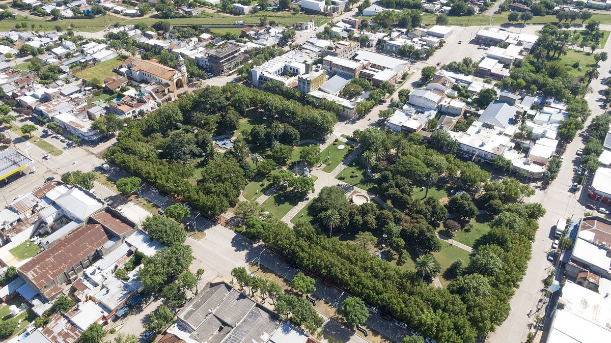

아르헨티나 부에노스아이레스주, 전기협동조합이 조합원 쓸 재생에너지 직접 생산하는 '법 15.665' 시행…주립은행 장기 저리 융자 길 열어

시 배전 영업권 가진 협동조합·혼합경제회사에 '공동체 자가발전자' 지위…생산 전기는 배전 공공서비스로 보고 여러 조합 공동 발전 허용, 남는 전기 팔려면 주식회사 형태 필요
아르헨티나 부에노스아이레스주가 시로부터 배전 영업권을 받은 전기협동조합과 혼합경제회사가 재생에너지로 전기를 직접 만들어 조합원과 이용자에게 공급할 수 있게 한 법 15.665를 공포했다. 이 법은 10월 30일 주 관보에 실렸으며, 1996년부터 이어져 온 주 전기 규제 틀인 법 11.769를 고쳐 '공동체 자가발전자(autogenerador comunitario)'를 전력 사업 주체로 새로 넣었다. 공동체 자가발전자는 주무 기관의 허가를 받아 재생에너지로만 전기를 생산해 자기 영업 구역 조합원·이용자 수요의 전부 또는 일부를 채울 수 있고, 이렇게 만든 전기는 그 구역 배전 공공서비스의 일부로 본다. 협동조합 둘 이상이 함께 발전 사업을 할 수도 있지만, 남는 전기를 팔려면 국가 규정에 따라 주식회사 형태로 조직해야 한다. 주 정부는 부에노스아이레스주립은행을 통해 이들이 국산 부품과 설비를 살 수 있도록 장기·저금리 특별 융자를 마련하도록 했고, 재생에너지 촉진법인 법 14.838의 혜택 대상에도 이 협동조합과 혼합경제회사를 넣었다. 법안은 주 하원의원 비비아나 구소(Viviana Guzzo)가 발의해 양원에서 만장일치로 통과됐으며, 주 상원 논의에서는 태양광 단지 투자를 검토하다 규정에 막힌 헤네랄 비아몬테 전기협동조합 사례가 거론됐다.
시민에너지 관점
조합원에게 전기를 나눠 주던 배전 협동조합이 이제 그 전기를 직접 만들 수 있게 된 것은, 소유 구조는 그대로 둔 채 발전까지 지역 안으로 들여오는 변화다. 협동조합이 발전 설비 투자를 감당할 수 있겠느냐는 우려에 이 법은 주립은행의 장기·저리 융자와 여러 조합의 공동 발전 허용으로 답하고 있다. 조합원 공급은 공공서비스로, 남는 전기 판매는 주식회사로 나눈 것도 판매 이익보다 지역 공급을 앞세우는 협동조합의 성격을 지키려는 선 긋기로 읽힌다. 국내에서도 에너지협동조합과 지역 공공 주체가 주민에게 전기를 직접 공급할 수 있는 법적 지위와 공공 금융을 함께 마련해야 시민발전이 전기 판매 사업에 머물지 않는다.
출처: La Tecla 2026-10-30 기자 미표기 원문 보기
출처: Ámbito 2026-10-30 기자 미표기 원문 보기
アルゼンチン・ブエノスアイレス州、電力協同組合が組合員向け再生可能エネルギーを自ら発電できる「法15.665」施行…州立銀行の長期低利融資に道
市から配電事業権を得た協同組合・混合経済会社に「共同体自家発電者」の地位…発電した電気は配電公共サービスとみなし複数組合の共同発電も容認、余剰電力の販売には株式会社形態が必要
アルゼンチンのブエノスアイレス州は、市から配電事業権を受けた電力協同組合と混合経済会社が、再生可能エネルギーで電気を自ら発電し、組合員や利用者に供給できるようにする法15.665を公布した。この法律は10月30日の州官報に掲載され、1996年から続く州の電力規制の枠組みである法11.769を改正し、「共同体自家発電者（autogenerador comunitario）」を電力事業の主体に新たに加えた。共同体自家発電者は所管機関の許可を受け、再生可能エネルギーだけで発電して自らの事業区域の組合員・利用者の需要の全部または一部を賄うことができ、こうして発電した電気はその区域の配電公共サービスの一部とみなされる。2つ以上の協同組合が共同で発電事業を行うこともできるが、余剰電力を販売するには国の規定に従って株式会社の形態で組織しなければならない。州政府は、ブエノスアイレス州立銀行を通じて国産の部品や設備を購入できるよう長期・低金利の特別融資を用意するよう定め、再生可能エネルギー促進法である法14.838の優遇対象にもこれらの協同組合と混合経済会社を加えた。法案は州下院議員のビビアナ・グソ（Viviana Guzzo）氏が提出し、上下両院で全会一致で可決され、州上院の審議では太陽光発電所への投資を検討したものの規定に阻まれたヘネラル・ビアモンテ電力協同組合の例が取り上げられた。
市民エネルギーの視点
組合員に電気を配ってきた配電協同組合が、その電気を自ら作れるようになったことは、所有構造をそのままに発電まで地域の中に取り込む変化だ。協同組合に発電設備への投資ができるのかという懸念に対し、この法律は州立銀行の長期・低利融資と複数組合による共同発電の容認で答えている。組合員への供給は公共サービス、余剰電力の販売は株式会社と分けたことも、販売利益より地域への供給を優先する協同組合の性格を守るための線引きと読める。韓国でも、エネルギー協同組合や地域の公共主体が住民に直接電気を供給できる法的地位と公的金融を併せて整えてこそ、市民発電が売電事業にとどまらずに済む。
出典: La Tecla 2026-10-30 記者名なし 原文を読む
出典: Ámbito 2026-10-30 記者名なし 原文を読む
阿根廷布宜诺斯艾利斯省"第15.665号法"生效，电力合作社可为社员自行生产可再生能源…省立银行将提供长期低息贷款
持有市级配电特许经营权的合作社和混合所有制公司获得"社区自发电者"地位…所发电力视为配电公共服务，允许多家合作社联合发电，出售余电须采用股份公司形式
阿根廷布宜诺斯艾利斯省颁布第15.665号法，允许从市政府获得配电特许经营权的电力合作社和混合所有制公司利用可再生能源自行发电，供应给社员和用户。该法于10月30日刊登在省政府公报上，修改了自1996年起实施的省电力监管框架第11.769号法，新增"社区自发电者"（autogenerador comunitario）作为电力行业主体。社区自发电者经主管机关许可，可只用可再生能源发电，满足本经营区域内社员和用户的全部或部分需求，所发电力被视为该区域配电公共服务的一部分。两家以上合作社可以联合开展发电业务，但如要出售余电，须按照国家规定以股份公司形式组建。省政府须通过布宜诺斯艾利斯省立银行推出长期低息专项贷款，帮助他们购买国产零部件和设备，并把这些合作社和混合所有制公司纳入可再生能源促进法第14.838号法的优惠对象。该法案由省众议员比维亚娜·古索（Viviana Guzzo）提出，在参众两院均获一致通过；省参议院审议时还提到了赫内拉尔比亚蒙特电力合作社的例子——该合作社曾考虑投资太阳能电站，却被规定挡住。
市民能源视角
一直向社员分配电力的配电合作社如今可以自己发电，这是在保持所有权结构不变的情况下，把发电环节也引入地方的变化。对于合作社能否承担发电设备投资的担忧，这部法律以省立银行的长期低息贷款和允许多家合作社联合发电作出回应。把向社员供电定为公共服务、把出售余电划归股份公司，也可以看作为了守住合作社"地方供应优先于售电利润"属性而划出的界线。韩国也应同时为能源合作社和地方公共主体提供可直接向居民供电的法律地位和公共金融，市民发电才不会停留在卖电生意上。
来源: La Tecla 2026-10-30 未署名 查看原文
来源: Ámbito 2026-10-30 未署名 查看原文
Argentina's Buenos Aires province brings 'Law 15.665' into force, letting electricity cooperatives generate renewable power for their members, with long-term low-rate loans from the provincial bank
Cooperatives and mixed-economy companies holding municipal distribution concessions get 'community self-generator' status; their power counts as part of the public distribution service and joint generation is allowed, but selling surplus requires a public limited company
Argentina's Buenos Aires province has promulgated Law 15.665, allowing electricity cooperatives and mixed-economy companies that hold municipal distribution concessions to generate electricity from renewable sources themselves and supply it to their members and users. Published in the provincial Official Bulletin on 30 October, the law amends Law 11.769, the provincial electricity regulatory framework in place since 1996, adding the 'community self-generator' (autogenerador comunitario) as a new actor in the power sector. With authorisation from the regulator, a community self-generator may produce power exclusively from renewables to meet all or part of the demand of members and users in its own concession area, and that power is treated as part of the public distribution service in the area. Two or more cooperatives may join forces to generate, but to sell surplus power they must organise as a public limited company under national rules. The provincial government is to promote special long-term, low-interest credit lines through the Banco Provincia so that these entities can buy domestically made components and equipment, and the cooperatives and mixed-economy companies have been added to the beneficiaries of Law 14.838, the province's renewable energy promotion law. The bill, introduced by provincial deputy Viviana Guzzo, passed both chambers unanimously, and during the Senate debate the case of the General Viamonte electricity cooperative, which had looked at investing in a solar park but ran into regulatory obstacles, was cited.
Citizen Energy View
Allowing distribution cooperatives that already deliver power to their members to generate it themselves brings generation into the community while leaving ownership where it is. To the worry that cooperatives cannot afford generating equipment, the law answers with long-term, low-rate loans from the provincial bank and permission for several cooperatives to generate jointly. Treating supply to members as a public service while routing surplus sales through a public limited company can also be read as a line drawn to protect the cooperative character of putting local supply ahead of sales profits. Korea, too, needs to give energy cooperatives and local public bodies both the legal standing to supply residents directly and access to public finance, so that citizen power generation does not stop at selling electricity.
Source: La Tecla 2026-10-30 No byline Read the original
Source: Ámbito 2026-10-30 No byline Read the original